Este tutorial nos ayudará en los primeros pasos usando el sistema Odoo, la autenticación y navegación con los puntos principales de este tutorial para agilizar el aprendizaje de las funcionalidades de cada módulo.
Ingresar al Sistema
Antes de utilizar el sistema Odoo debemos autenticarnos en una pantalla inicial con nuestro usuario y contraseña
Una ves rellenados los credenciales, pulsamos el botón "log in"
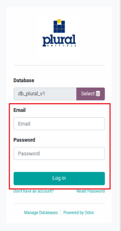
En caso que exista más de una base de datos asignada al sistema, primero elegiremos en un formulario la que corresponda al nombre de la compañía haciéndole click sobre su nombre, esto nos llevará al formulario de autenticación anterior
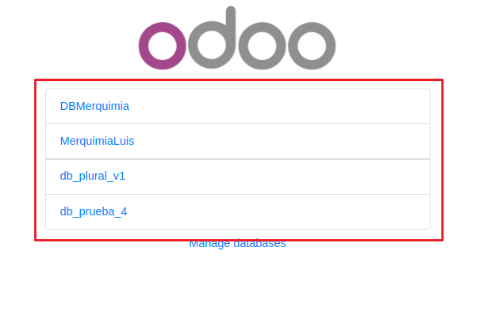
Si se comete un error al seleccionar la base de datos, en el campo "database" del formulario de autenticación hacemos click en el botón "select" al lado del nombre de la base de datos esto nos llevará de vuelta al formulario para elegir una base de datos
Barra de Menus
Por defecto la barra de menu principal aparece en el lado izquierdo de la pantalla en 3 modos posibles, en forma de una barra lateral con iconos y nombres, una barra lateral solo con iconos o un único icono en la esquina superior izquierda
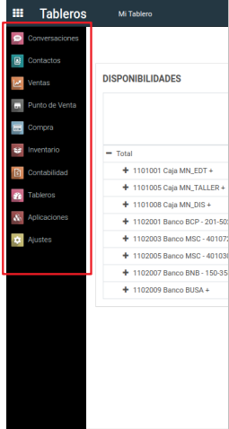
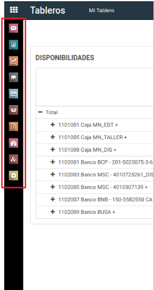
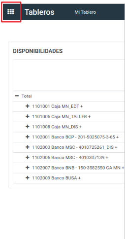
En cualquiera de los casos podemos hacer click en el icono superior como en el último ejemplo para desplegar el menu de modulos en toda la pantalla de la siguiente forma
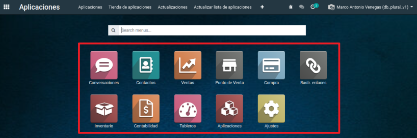
Barra de Submenus
Al ingresar en cualquier módulo del menu principal veremos en la parte superior de la pantalla la barra de submenu del módulo y a su lado izquierdo el nombre del módulo en que estamos ubicados, cabe destacar que el submenu que veamos dependerá del módulo al que hayamos accedido y en cierta medida de los privilegios que tengamos como usuarios
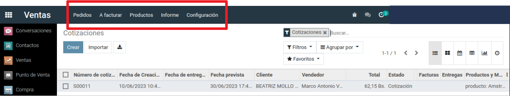
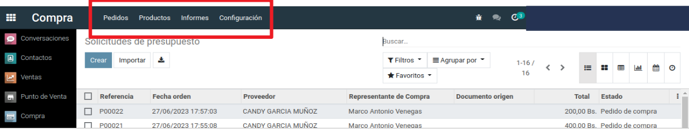
Cada elemento del submenu a su vez tiene diferentes opciones con las que controlaremos nuestro sistema
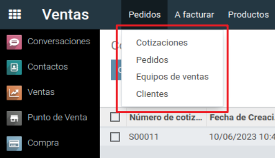
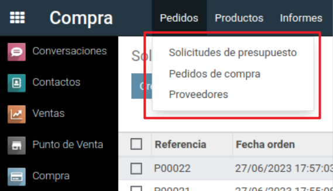
Cabecera de Modulos
Al ingresar en cualquier módulo, aunque pueda variar en cierta medida encontraremos casi el mismo formato de cabecera, en la parte izquierda el nombre del módulo, una opción de creación, importación y descarga, en la parte derecha un formulario de búsqueda filtro y agrupaciones, además de iconos de los diferentes tipos de vistas habilitados para la vista en que nos encontramos
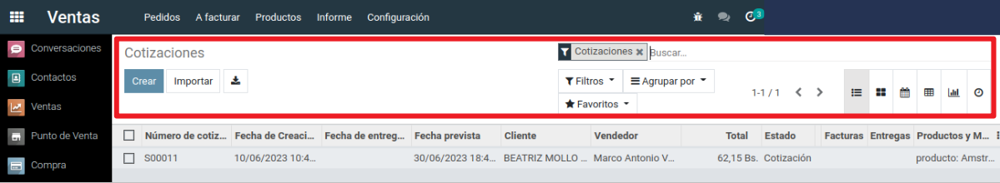
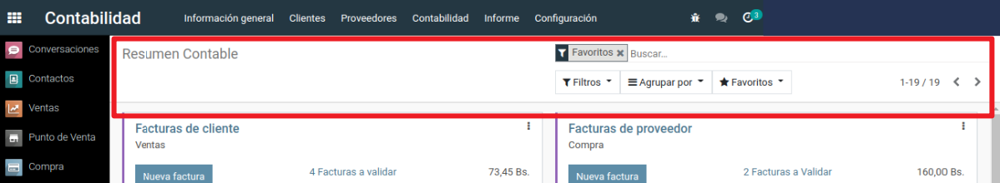
A continuación se muestra un ejemplo del funcionamiento de las opciones de filtro y agrupación
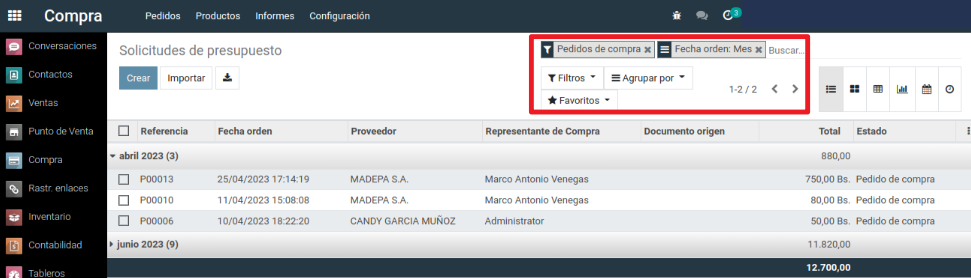
la opción de filtro oculta los registros que no entren en la selección, mientras que la agrupación solo separa los registros en grupos de acuerdo al atributo que elijamos, la opción "favoritos" guarda la combinación de filtro y agrupación que tengamos seleccionada para usarla en otro momento
Edicion de Preferencias
En cualquier módulo nos dirigimos a la barra de submenu, en su extremo derecho encontramos nuestro nombre de usuario, hacemos click y buscamos la opción "preferencias"
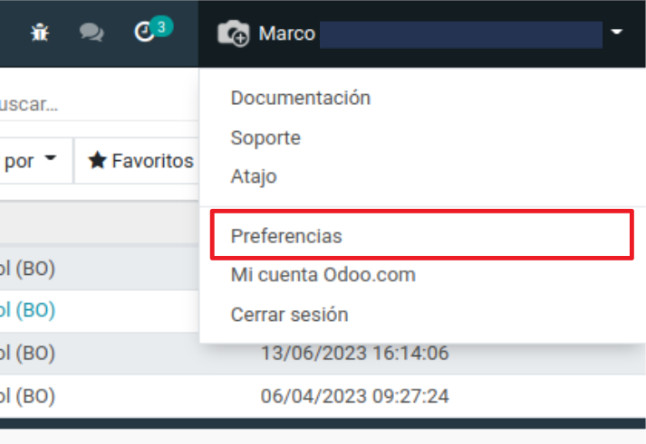
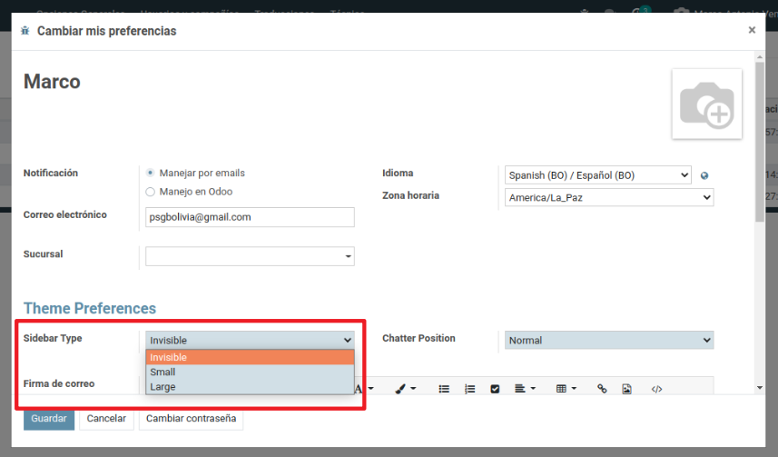
En el formulario de preferencias podemos editar algunas opciones de nuestro entorno, las opciones principales de personalización son:
Sidebar type: Modifica la barra lateral del menu principal en sus 3 modos, (Large: barra de menu con nombres e iconos), (Small: barra de menu solo con iconos), (Invisible: un solo icono que despliega el menu principal en toda la pantalla)
Cambiar contraseña: Pide la contraseña actual y la contraseña nueva con su confirmación
Esta serie de tutoriales nos ayudará a entender la amplia variedad de funciones que ofrece el módulo de Contabilidad, entender la organización de su submenu y el acceso que tiene a funciones de otros modulos.
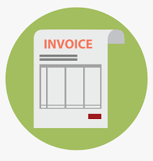
Listar Facturas
En el módulo de Contabilidad nos dirigimos al submenu de Proveedores y a la opción "Facturas" para acceder a las facturas de compra
Para ver las facturas de venta nos dirigimos al submenu de Clientes y la opcion "Facturas"
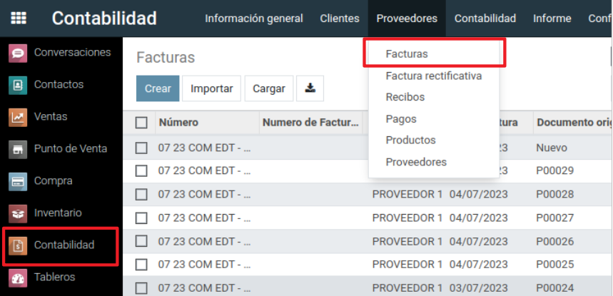
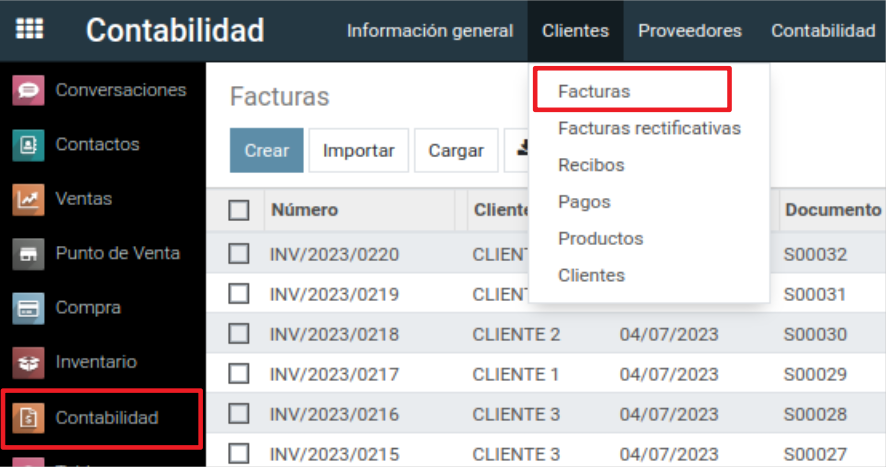
La vista de facturas de compras y ventas tienen la misma estructura con variacion en algunos campos de la tabla
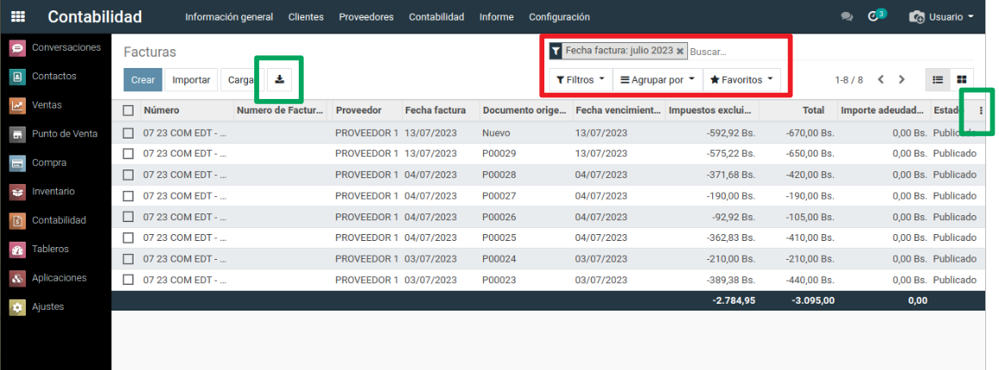
en ambos casos contamos con la sección de búsqueda donde podemos filtrar o agrupar las facturas para su visualización o imprimir un reporte
las columnas de la tabla pueden modificarse en caso de que necesitemos quitar o añadir campos para el reporte, en el costado derecho de la tabla el icono de tres puntos nos mostrara todos los campos que pueden incluirse o quitarse de la tabla, al terminar hacemos click en el botón de descarga para imprimir la tabla en excel
Crear Facturas
Es preferible evitar la creación de facturas de forma individual, pero en caso de que se requiera tambien se puede crear directamente una factura sin crear previamente una compra o venta
En ambos casos hacemos click sobre el boton "crear" en la vista donde tenemos el listado de facturas
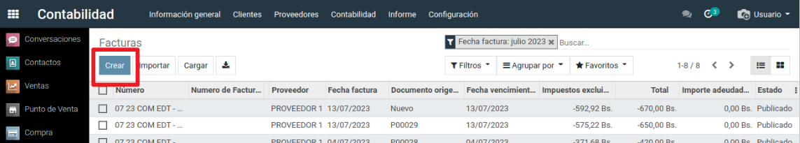
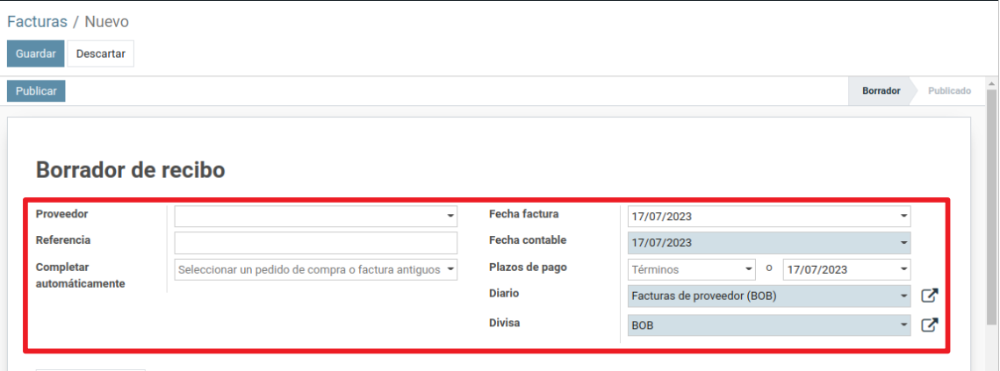
en la cabecera del formulario de facturas de compra encontraremos los siguientes campos:
Proveedor: seleccionamos a nombre de que proveedor se hara la factura
Referencia:
Completar Automaticamente:
Fecha Factura:
Fecha Contable:
Plazos de Pago:
Diario:
Divisa:
En el caso de las facturas de ventas encontramos la cabecera de la siguiente forma
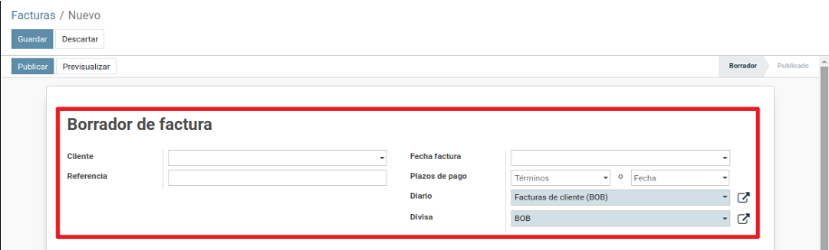
Sus campos son los siguientes:
Cliente: seleccionamos a nombre de que cliente se hara la factura
Referencia:
Fecha Factura: por defecto se fija en la fecha actual pero es un campo editable
Plazos de Pago: si se cancela el total del pago puede seleccionarse la opcion pago inmediato, un intervalo de pagos o una fecha en que se realizara el pago
Diario:
Divisa: seleccionamos la moneda en que se realizara la transaccion
Debajo de la cabecera en ambos casos de facturas encontraremos una tabla donde añadiremos los productos para la factura
Iniciamos haciendo click en la opcion "agregar registro"
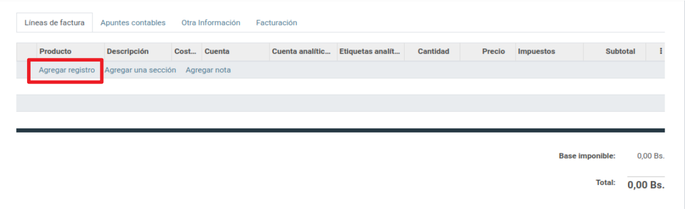
Para buscar un producto, empezamos a escribir su nombre hasta que aparezca en la lista
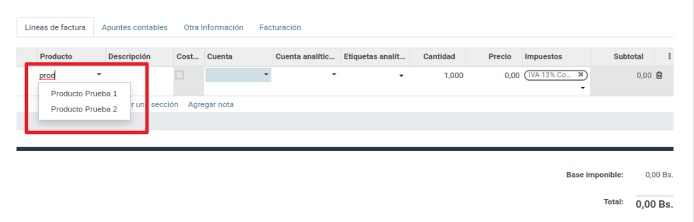
Cuando agregamos un producto podemos modificar sus atributos como el precio unitario y cantidad.
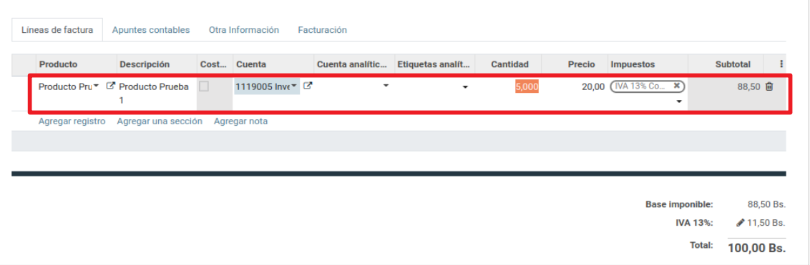
Al terminar con el registro de productos pulsamos el boton guardar y publicamos la factura, el estado de la factura pasará de borrador a publicado.
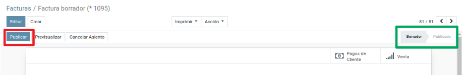
Luego de publicar la factura registramos sus pagos (es posible registrar varios pagos que en su total sumen la cantidad de la factura), hacemos click en "registrar pago".
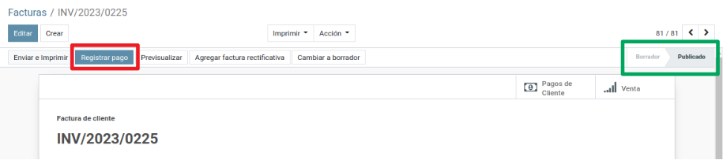
Para registrar cada pago debemos rellenar datos del monto, divisa, fecha del pago
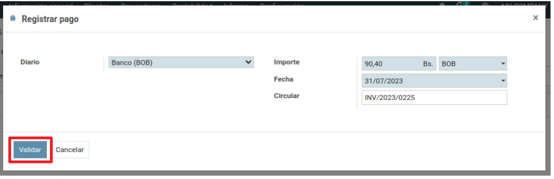
Podemos registrar pagos por diferentes montos hasta completar el total de la factura, llegado ese punto la factura se actualizará con una etiqueta "pagado", desde que la factura pasa a estado publicado podemos imprimir reportes como su comprobante contable
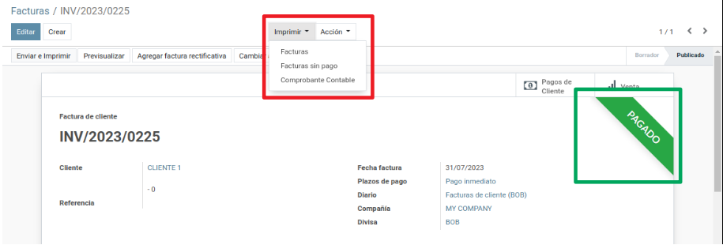
Listar Pagos
En el módulo de Contabilidad nos dirigimos al submenu de Proveedores y a la opción "Pagos" para acceder a los pagos de compras
Para ver los pagos de ventas nos dirigimos al submenu de Clientes y la opcion "Pagos"
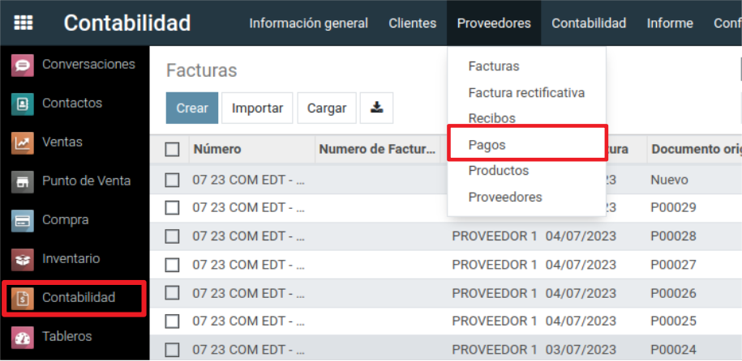
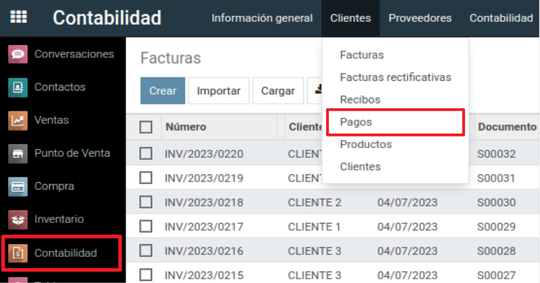
La vista de pagos de compras y ventas tienen la misma estructura y campos, el valor de sus campos los identifica como pagos de proveedores o clientes, al ingresar al listado un filtro en la seccion de busqueda nos muestra los pagos de proveedores o clientes de acuerdo a la opcion a la que ingresamos (este filtro puede quitarse o modificarse)
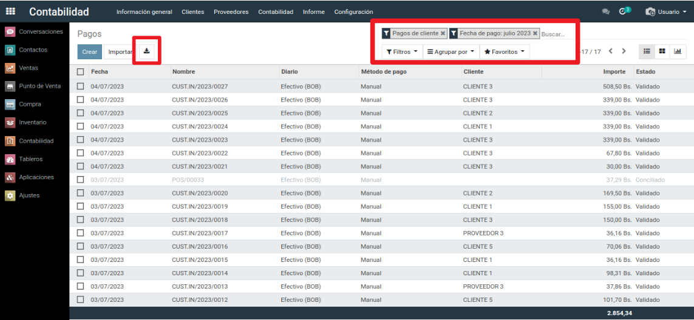
en ambos casos contamos con la sección de búsqueda donde podemos filtrar o agrupar los pagos para su visualización o imprimir un reporte
cuando tengamos los pagos filtrados y agrupados de la forma que se necesiten hacemos click en el botón de descarga para imprimir la tabla en excel
listar Asientos y Apuntes Contables
En el módulo de Contabilidad nos dirigimos al submenu "Contabilidad" e ingresamos a "Asientos Contables"
Para el caso de apuntes contables en la misma dirección hacemos click en la opción "Apuntes Contables"
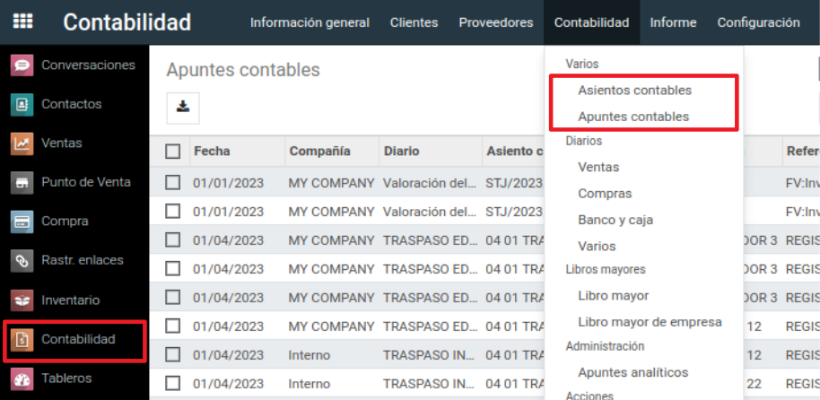
En ambos casos encontraremos una sección de búsqueda con opciones por defecto y una lista con los asientos o apuntes contables registrados (las opciones por defecto pueden modificarse en caso de que necesitemos filtrar o agrupar de cierta forma los registros para un reporte)
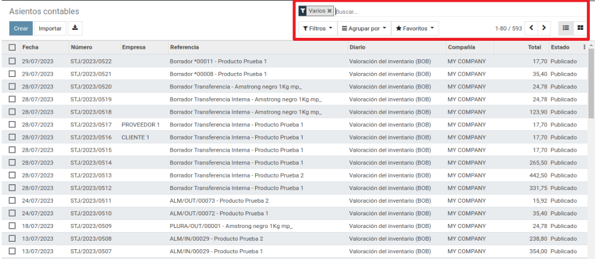
Al ingresar a un asiento contable debajo de la barra de estado se encuentran distintos botones con los que podemos dirigirnos a los documentos asociados al asiento
La opción "asientos conciliados" nos muestra los apuntes contables que conforman el asiento
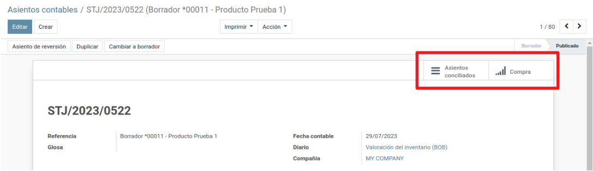
En los apuntes contables contamos con un unico botón que nos dirige al asiento del que es parte
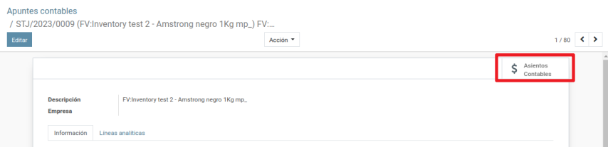
desde un asiento contable, en la opción imprimir podemos descargar un reporte de comprobante contable
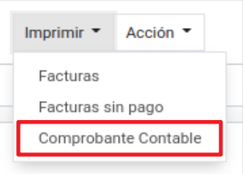
FIN DEL COMUNICADO
las columnas de la tabla pueden modificarse en caso de que necesitemos quitar o añadir campos para el reporte, en el costado derecho de la tabla el icono de tres puntos nos mostrara todos los campos que pueden incluirse o quitarse de la tabla, al terminar hacemos click en el botón de descarga para imprimir la tabla en excel
Crear Facturas
Es preferible evitar la creación de facturas de forma individual, pero en caso de que se requiera tambien se puede crear directamente una factura sin crear previamente una compra o venta
En ambos casos hacemos click sobre el boton "crear" en la vista donde tenemos el listado de facturas
en la cabecera del formulario de facturas de compra encontraremos los siguientes campos:
Proveedor: seleccionamos a nombre de que proveedor se hara la factura
Referencia:
Completar Automaticamente:
Fecha Factura:
Fecha Contable:
Plazos de Pago:
Diario:
Divisa:
En el caso de las facturas de ventas encontramos la cabecera de la siguiente forma
Sus campos son los siguientes:
Cliente: seleccionamos a nombre de que cliente se hara la factura
Referencia:
Fecha Factura: por defecto se fija en la fecha actual pero es un campo editable
Plazos de Pago: si se cancela el total del pago puede seleccionarse la opcion pago inmediato, un intervalo de pagos o una fecha en que se realizara el pago
Diario:
Divisa: seleccionamos la moneda en que se realizara la transaccion
Debajo de la cabecera en ambos casos de facturas encontraremos una tabla donde añadiremos los productos para la factura
Iniciamos haciendo click en la opcion "agregar registro"
Para buscar un producto, empezamos a escribir su nombre hasta que aparezca en la lista
Cuando agregamos un producto podemos modificar sus atributos como el precio unitario y cantidad.
Al terminar con el registro de productos pulsamos el boton guardar y publicamos la factura, el estado de la factura pasará de borrador a publicado.
Luego de publicar la factura registramos sus pagos (es posible registrar varios pagos que en su total sumen la cantidad de la factura), hacemos click en "registrar pago".
Para registrar cada pago debemos rellenar datos del monto, divisa, fecha del pago
Podemos registrar pagos por diferentes montos hasta completar el total de la factura, llegado ese punto la factura se actualizará con una etiqueta "pagado", desde que la factura pasa a estado publicado podemos imprimir reportes como su comprobante contable
Listar Pagos
En el módulo de Contabilidad nos dirigimos al submenu de Proveedores y a la opción "Pagos" para acceder a los pagos de compras
Para ver los pagos de ventas nos dirigimos al submenu de Clientes y la opcion "Pagos"
La vista de pagos de compras y ventas tienen la misma estructura y campos, el valor de sus campos los identifica como pagos de proveedores o clientes, al ingresar al listado un filtro en la seccion de busqueda nos muestra los pagos de proveedores o clientes de acuerdo a la opcion a la que ingresamos (este filtro puede quitarse o modificarse)
en ambos casos contamos con la sección de búsqueda donde podemos filtrar o agrupar los pagos para su visualización o imprimir un reporte
cuando tengamos los pagos filtrados y agrupados de la forma que se necesiten hacemos click en el botón de descarga para imprimir la tabla en excel